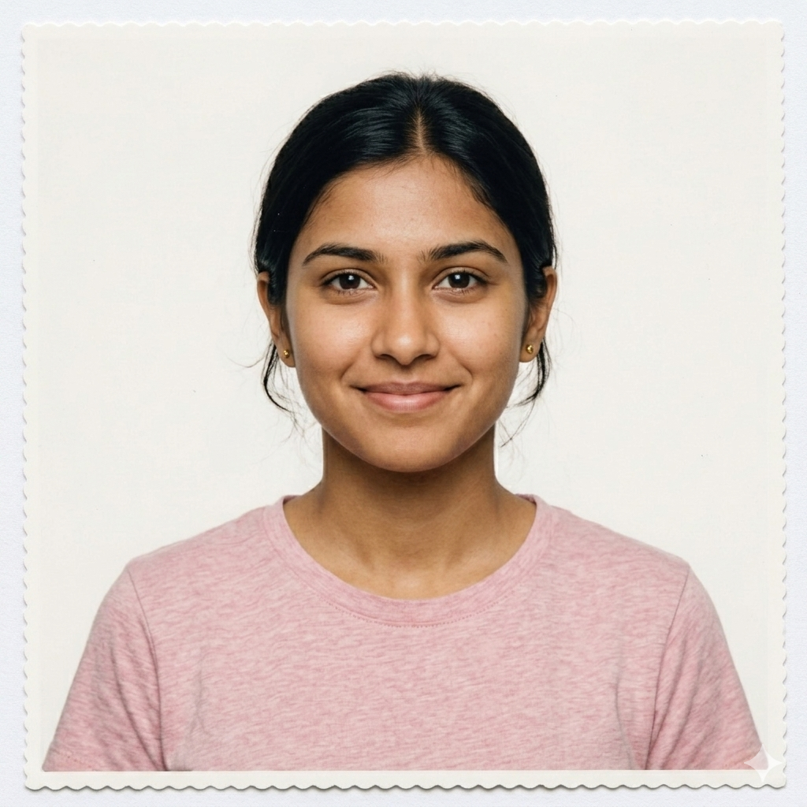
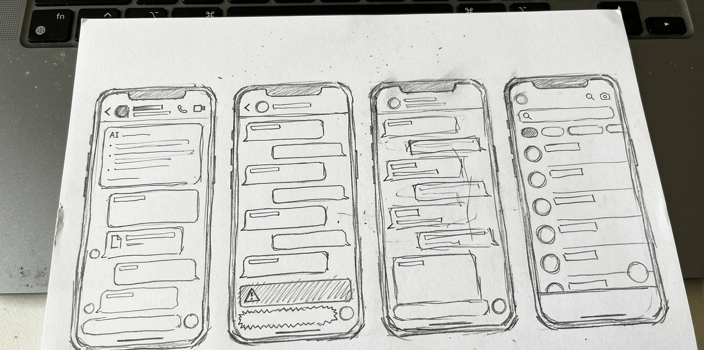
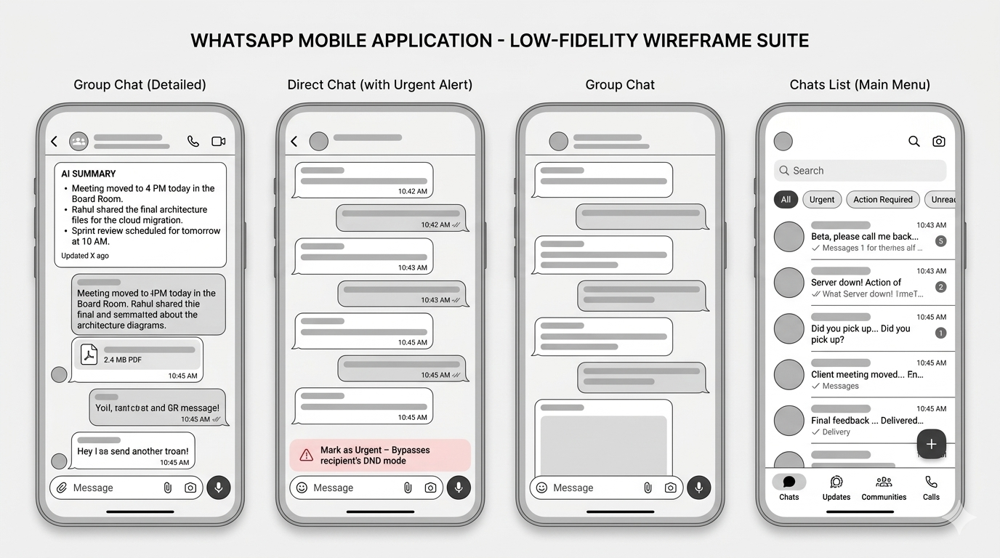
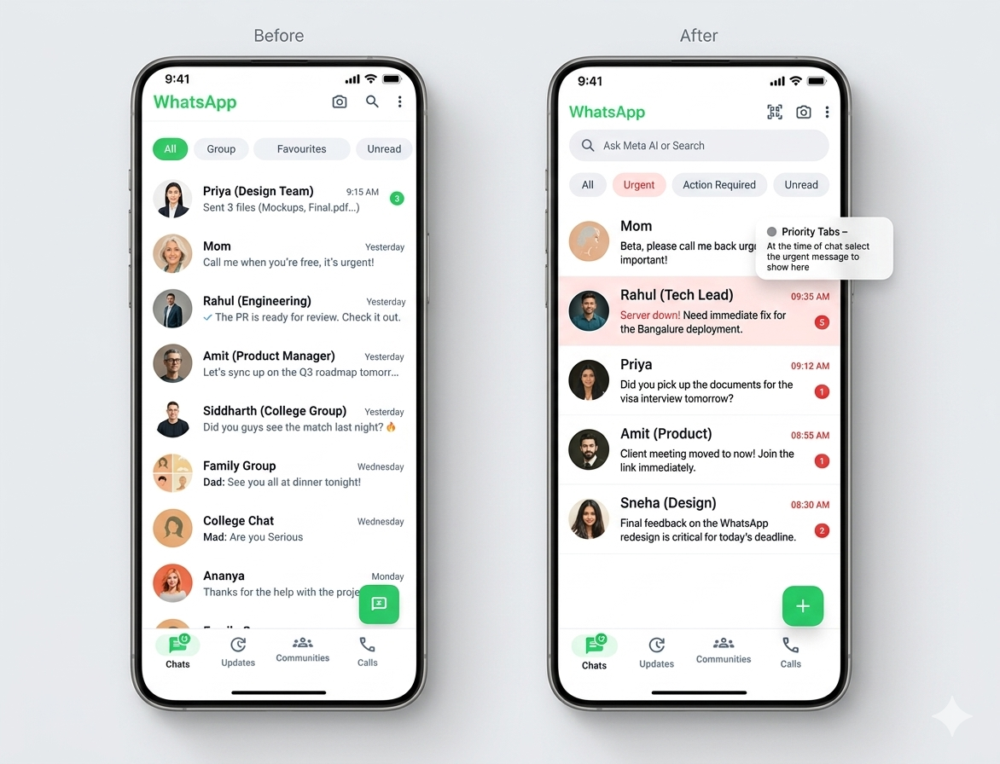

“Users weren’t struggling to send messages. They were drowning in them.”
Reduced cognitive overload in volume chats

Core Problem
“Messaging failed at human comprehension, not delivery.”
- Message Overload: Noise ratio exceeds processing capacity.
- Context Loss: Inability to prioritize critical vs casual chats.
- Mental Fatigue: Decision paralysis when opening the app.
• Continuous message flow
• Mixed personal + group noise
Too many choices. No clear path.
WHY IT MATTERS
Cognitive Load
Reducing the bandwidth needed to find priority information.
Behavioral Breakdown
Understanding why users avoid group chats during peak work hours.
System Inefficiency
Fixing the "always alert" state that leads to notification burnout.
The People Side
Amit, 34
Behavior: Manages 3 business groups and 5 vendor chats simultaneously.
Pain Point: Misses urgent vendor updates due to family group spam.
"Itne saare messages main IMP miss ho jata hai."
Riya, 21
Behavior: Rapid social communicator across 10+ active group chats.
Pain Point: Feels anxious by the volume of unread messages after class.
"Kaam ki baat dhoondhne mein time nikal jaata hai."CONSTRAINTS
Technical
Maintaining end-to-end encryption while enabling AI summarization.
Business
No changes to simple, familiar UI that older demographics love.
User Behavior
Avoiding a "learning curve" for a feature used by billions.
INSIGHTS
Behavioral
Users check WhatsApp as a 'reflex' but leave quickly if content is cluttered.
Cognitive
Priority is relative to time, not just the sender's identity.
System
Current chronological sorting is the enemy of relevance.
Emotional
Unread counts (Green badges) trigger low-level anxiety.
DESIGN STRATEGY
Clarity over Volume
Context over Isolation
Control without Complexity
Cognitive Load Reduction
IDEATION SKETCHES

"WhatsApp redesign ka asli maqsad sirf looks badalna nahi, balki users ka digital sukoon lautana hai."
Final Direction
After exploring 'Priority Inbox' (rejected for being too email-like) and 'Category Tabs' (rejected for being too complex), we landed on a hybrid: Urgent Filtering + AI Narrative Summaries.

USER MOVES
The Solution

Validation & Impact

40%
Scanning Time Reduced
2x
Comprehension Speed
0
Missed Critical Updates
"Right Communication." In ancient philosophy, Samyak Samvad refers to a dialogue that is truthful, beneficial, and creates harmony. Modern messaging often leads to noise and cognitive fatigue. By restructuring the flow of information, we return to the root of meaningful exchange—ensuring that every interaction restores clarity rather than clutter.
“Design is not just fixing a flow, it’s restoring the user’s mental peace.”